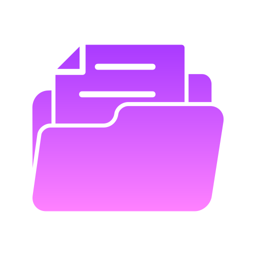
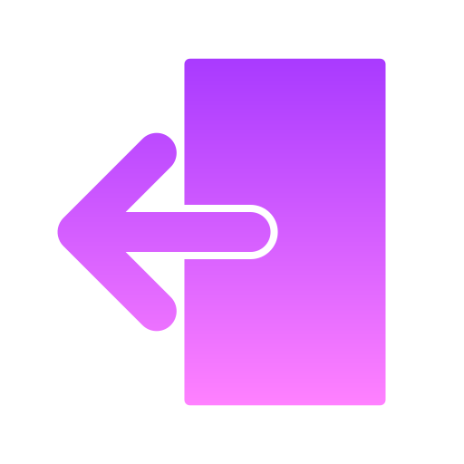
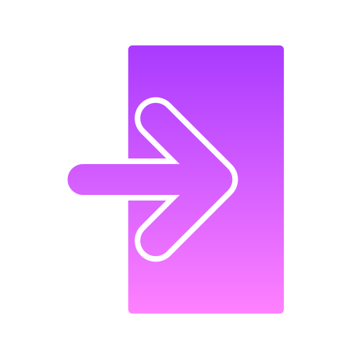
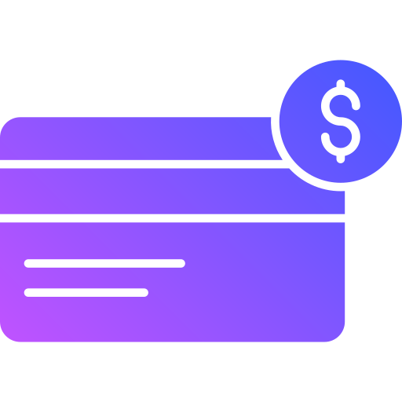

O sucesso de um negócio não depende apenas do serviço de entrega ou de um espaço agradável, o principal fator para o crescimento das vendas é o atendimento ao cliente, que envolve a comunicação humanizada e personalizada.
A conta é digital, e a abertura de conta e remessa de câmbio levam apenas poucos minutos. Proteja seu patrimônio contra o cenário local e mantenha recursos em dólar. Saiba mais! Não é cartão pré-pago. Não é travel card. Abra sua conta em minutos.


Além de não cobrar tarifas para TEDs, pagamentos de contas ou outros encargos convencionais, o Banco ZODIACO também não cobra nada para que seus clientes façam saques.
Depósito bancário é a operação financeira mediante a qual um banco recebe determinada quantia em dinheiro, comprometendo-se a mantê-la sob sua guarda e se obrigando a restituí-la, na mesma espécie, quando solicitado pelo depositante ou em data prefixada.


soluções que se encaixam ao seu perfil e que foram pensadas para simplificar o seu dia a dia. Confira o passo a passo para fazer uma transferência entre contas pela internet.
Se shiryu conseguiu derrotar o mascara da morte (cavaleiro de ouro), vocês também conseguem.